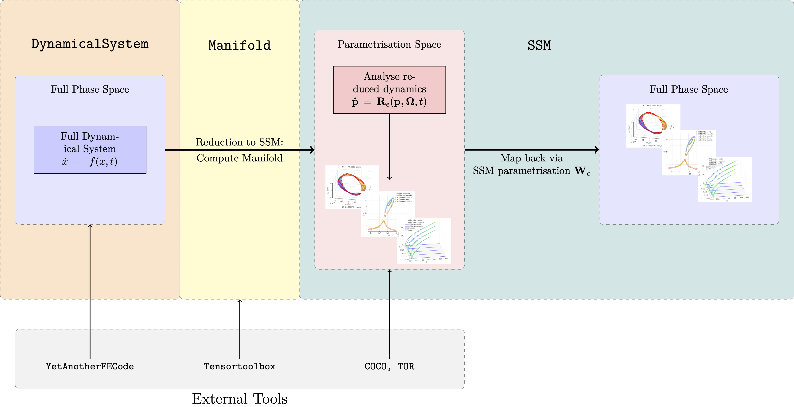

Toolbox Library
Contents
At the heart of SSMTool there are three classes, namely
- the DynamicalSystem class, for setting up and treating first and second order dynamical systems
- the Manifold class, for computing invariant manifolds such as SSMs in the phase space of a given dynamical systems
- the SSM class, for the computation of SSMs and analysis of the dynamics on them
Each of these classes is responsible for a certain part of the analysis, as displayed in the figure below. Note that the manifold class can be used to compute general type invariant manifolds, such as LSMs as well. In the context of SSM-analysis, it is used as an engine to compute SSMs.

DynamicalSystem
To store a dynamical system the DynamicalSystem is used. Furthermore this class also provides routines for analysing the full dynamical system, and for investigating the (reduced) spectral properties of the linear part.
Methods
Manifold
To compute and store invariant manifolds. the Manifold class is used. A set of methods are used to solve the invariance equations and compute the manifolds.
Methods
Spectral Submanifolds
To compute Spectral Submanifolds the SSM class is used. It is a subclass of the Manifold class.
Methods
The following methods are provided for the analysis of the reduced dynamics. For directly computing forced response curves, backbone curves and stability diagrams, the following functions are provided
For the general continuation of the reduced dynamics:
Other methods
Supplemental functionalities
Additional, custom built, functionalities for displaying and analysing the results of an SSM-computation are provided in the Features section.
Furthermore SSMTool is coupled with the continuation toolbox COCO. A wrapper for this toolbox is provided in